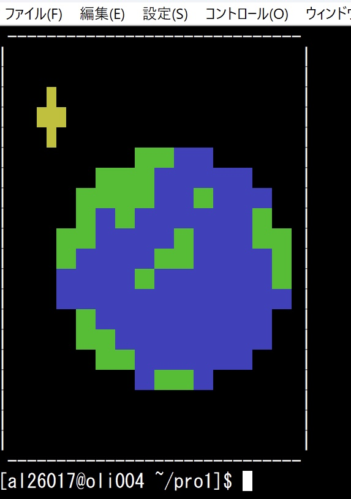
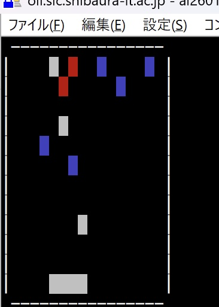
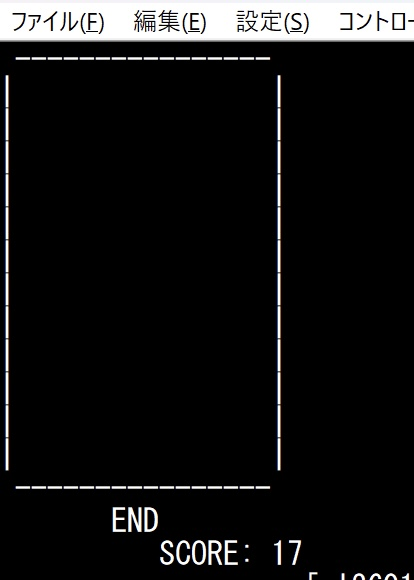
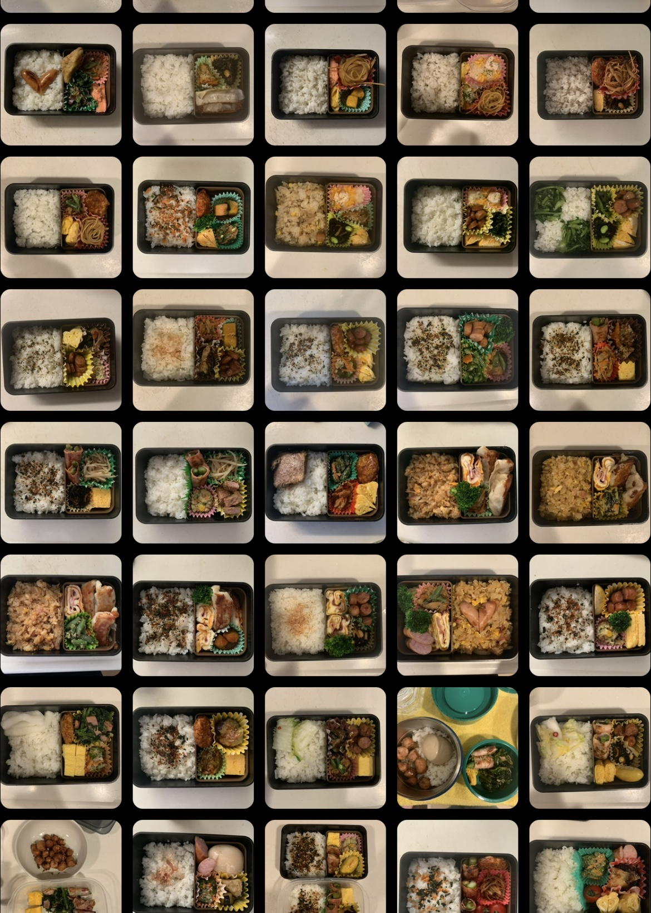
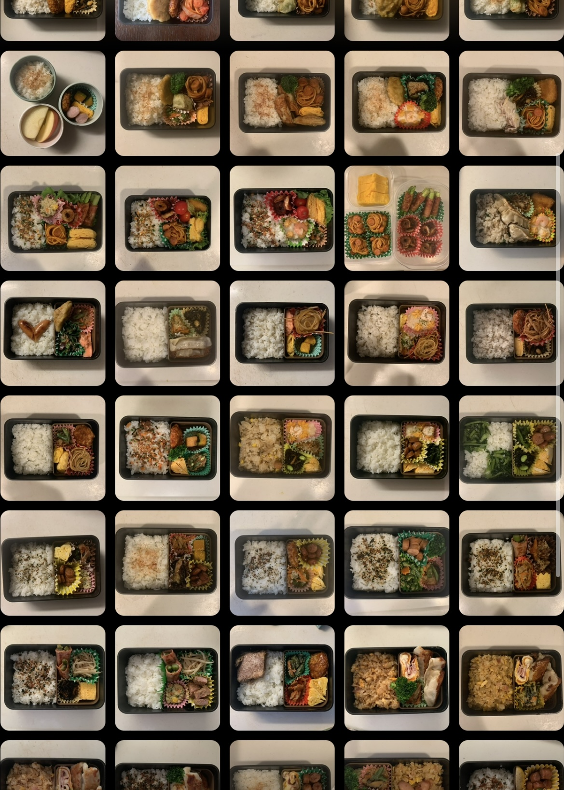

＜目次＞
ドット絵
terminalmode.hを使用して制作したドット絵
宇宙が好きなので原色で表しやすい地球を描いてみた。

＜コード＞
#include "terminalmode.h"
int main(void)
{
led_canvas_clear(); // fill canvas with ' ',
int x,y;
y=13;
while(13 < =y && y < =16){
led_canvas_set_pixel(5,y,MIDORI);
y=y+1;
}
y=17;
while(17 < =y && y < =20){
led_canvas_set_pixel(5,y,AO);
y=y+1;
}
y=9;
while(9 < =y && y < =14){
led_canvas_set_pixel(6,y,MIDORI);
y=y+1;
}
y=15;
while(15 < =y && y < =24){
led_canvas_set_pixel(6,y,AO);
y=y+1;
}
y=7;
while(7 < =y && y < =14){
led_canvas_set_pixel(7,y,MIDORI);
led_canvas_set_pixel(10,y,AO);
y=y+1;
}
y=15;
while(15 < =y && y < =18){
led_canvas_set_pixel(7,y,AO);
led_canvas_set_pixel(10,y,MIDORI);
y=y+1;
}
led_canvas_set_pixel(7,19,MIDORI);
led_canvas_set_pixel(7,20,MIDORI);
y=21;
while(21 < =y && y < =26){
led_canvas_set_pixel(7,y,AO);
y=y+1;
}
led_canvas_set_pixel(8,7,MIDORI);
led_canvas_set_pixel(8,8,MIDORI);
led_canvas_set_pixel(8,9,AO);
led_canvas_set_pixel(8,10,AO);
led_canvas_set_pixel(8,11,MIDORI);
led_canvas_set_pixel(8,12,MIDORI);
y=13;
while(13 < =y && y < =24){
led_canvas_set_pixel(8,y,AO);
y=y+1;
}
led_canvas_set_pixel(8,25,MIDORI);
led_canvas_set_pixel(8,26,MIDORI);
y=5;
while(5 < =y && y < =8){
led_canvas_set_pixel(9,y,MIDORI);
y=y+1;
}
y=9;
while(9 < =y && y < =16){
led_canvas_set_pixel(9,y,AO);
y=y+1;
}
led_canvas_set_pixel(9,17,MIDORI);
led_canvas_set_pixel(9,18,MIDORI);
y=19;
while(19 < =y && y < =24){
led_canvas_set_pixel(9,y,AO);
y=y+1;
}
y=25;
while(25 < =y && y < =28){
led_canvas_set_pixel(9,y,MIDORI);
y=y+1;
}
led_canvas_set_pixel(10,5,MIDORI);
led_canvas_set_pixel(10,6,MIDORI);
y=19;
while(19 < =y && y < =26){
led_canvas_set_pixel(10,y,AO);
y=y+1;
}
led_canvas_set_pixel(10,27,MIDORI);
led_canvas_set_pixel(10,28,MIDORI);
y=5;
while(5 < =y && y < =12){
led_canvas_set_pixel(11,y,AO);
led_canvas_set_pixel(12,y,AO);
y=y+1;
}
led_canvas_set_pixel(11,13,MIDORI);
led_canvas_set_pixel(11,14,MIDORI);
y=15;
while(15 < =y && y < =26){
led_canvas_set_pixel(11,y,AO);
led_canvas_set_pixel(12,y,AO);
y=y+1;
}
led_canvas_set_pixel(11,27,MIDORI);
led_canvas_set_pixel(11,28,MIDORI);
led_canvas_set_pixel(12,13,AO);
led_canvas_set_pixel(12,14,AO);
led_canvas_set_pixel(12,27,AO);
led_canvas_set_pixel(12,28,AO);
led_canvas_set_pixel(13,7,MIDORI);
led_canvas_set_pixel(13,8,MIDORI);
led_canvas_set_pixel(13,9,AO);
led_canvas_set_pixel(13,10,AO);
y=11;
while(11 < =y && y < =26){
led_canvas_set_pixel(13,y,AO);
led_canvas_set_pixel(14,y,AO);
y=y+1;
}
y=7;
while(7 < =y && y < =10){
led_canvas_set_pixel(14,y,MIDORI);
y=y+1;
}
y=9;
while(9 < =y && y < =12){
led_canvas_set_pixel(15,y,MIDORI);
y=y+1;
}
y=13;
while(13 < =y && y < =24){
led_canvas_set_pixel(15,y,AO);
y=y+1;
}
y=15;
while(15 < =y && y < =18){
led_canvas_set_pixel(16,y,MIDORI);
y=y+1;
}
led_canvas_set_pixel(16,13,AO);
led_canvas_set_pixel(16,14,AO);
led_canvas_set_pixel(16,19,AO);
led_canvas_set_pixel(16,20,AO);
led_canvas_set_pixel(2,4,KI);
led_canvas_set_pixel(3,3,KI);
led_canvas_set_pixel(3,4,KI);
led_canvas_set_pixel(3,5,KI);
led_canvas_set_pixel(4,4,KI);
led_canvas_display();
printf(reset);
return 0;
}
ゲーム
terminalmode2.hを使用して制作したゲーム
授業で習ったコードを生かそうという固定観念に謎に縛られた結果、
常にあるであろうゲームの下位互換という無個性の塊のようなゲームを作ってしまった。
見ている人は同じ過ちをしないように。


＜ゲーム設定＞
板を動かして落下してくるブロックを受け止めて高いスコアを出そう
- jキー：板が左に動く
- kキー：板が右に動く
- 白いブロック：+1
- 青いブロック：+3
- 赤いブロック：ゲームオーバー
- 制限時間：30s
#include "terminalmode3.h" // include tera.h and ansi_color.h
#define BLOCKS 15
int main(void)
{
led_canvas_setsize(0,0); //必須
unsigned int usec=70000; // micro second /*画面更新時間*/ // our default sleep duration
unsigned int counter=0, speed=30; // screen updata and object moving spped
int n, i, k,j;
int invaderROW[BLOCKS], invaderCOL[BLOCKS];
int invaderColor[BLOCKS], invaderSpeed[BLOCKS];
int score=0;
int bar_col = 4; // 左端の位置
int bar_width = 4; // 横幅
int bar_row = 11; // どの高さに置くか（固定）
char ch;
int hitCount = 0; // ブロックに当たった回数
time_t start = time(NULL);
led_canvas_clear();
set_terminal_reset(); // set terminal raw mode
nonblock();/*上の二つとセットでEnterを押さずにリアルタイムで操作できる*/
//落ちてくるブロックの設定
for(i=0;i < BLOCKS;i++){
invaderROW[i]=0;
invaderCOL[i]=rand()%LED_COL;
int r = rand() % 4; // 0,1,2,3 の3通り
if(r == 0 || r == 1)
invaderColor[i] = SHIRO; // 白が2回
else if(r == 2 ){
invaderColor[i] = AO; // 赤が1回
}else invaderColor[i] = AKA;
if(invaderColor[i]==AO){
invaderSpeed[i]=5+rand()%15;
}else invaderSpeed[i]=10+rand()%15;
}
//落ちてくるブロックの設定終
while (1)
{
if(time(NULL) - start >= 30)
break;
usleep(usec);
led_canvas_clear(); /*毎フレーム画面を一度クリアしてから描画しなおす*/
counter++;
ch=getkbchar(); //キー入力
if(ch == 'j' && bar_col > 0) bar_col--;
if(ch == 'k' && bar_col + bar_width < LED_COL) bar_col++;
if(ch == 'x') break;
/*動かす板の設定*/
for(i=0;i < bar_width;i++){
led_canvas_set_pixel(bar_row,bar_col+i,SHIRO);
}
for(i=0;i < BLOCKS;i++)
{
if (counter % invaderSpeed[i] == 0) {
if (invaderROW[i] + 1 >= LED_ROW) {
invaderROW[i] = 0;
invaderCOL[i] = rand() % LED_COL;
int r = rand() % 4;
if (r == 0 || r == 1)
invaderColor[i] = SHIRO;
else if (r == 2)
invaderColor[i] = AO;
else
invaderColor[i] = AKA;
if (invaderColor[i] == AO)
invaderSpeed[i] = 5 + rand()%15;
else
invaderSpeed[i] = 10 + rand()%15;
} else {
invaderROW[i]++;
}
}
led_canvas_set_pixel(invaderROW[i], invaderCOL[i], invaderColor[i]);
if( invaderROW[i] == bar_row
&& invaderCOL[i] >= bar_col
&& invaderCOL[i] < bar_col + bar_width ) /*当たり判定*/
{
if(invaderColor[i]==SHIRO){
for(k=0;k < bar_width;k++){
led_canvas_set_pixel(bar_row,bar_col+k,KI);
score++;
}
}
else if(invaderColor[i]==AO){
for(k=0;k < bar_width;k++){
led_canvas_set_pixel(bar_row,bar_col+k,AO);
score=score+3;
}
}
else {
for(k=0;k < bar_width;k++){
led_canvas_set_pixel(bar_row,bar_col+k,AKA);
led_canvas_display(); // 最後の表示
printf("GAME OVER\n");
return 0;
}
hitCount++; // 当たった回数を増やす
if (hitCount % 10 == 0) { // 10回ごと
for (j=0; j < BLOCKS; j++) {
if (invaderColor[j] == AKA) { // 赤だけ
invaderSpeed[j] -= 2; // 速くする
if (invaderSpeed[j] < 2) // 速くなりすぎ防止
invaderSpeed[j] = 2;
}
}
}
invaderROW[i] = 0;
invaderCOL[i] = rand() % LED_COL;
int r = rand() % 4;
if(r == 0 || r == 1)
invaderColor[i] = SHIRO; // 白が2回
else if(r == 2 ){
invaderColor[i] = AO; // 赤が1回
}else invaderColor[i] = AKA;
continue;
}
}
led_canvas_set_pixel(invaderROW[i], invaderCOL[i], invaderColor[i]);
}
}
led_canvas_display();
}
led_canvas_clear();
led_canvas_display();
printf(" END\n");
printf("SCORE: %d\n", score);
return 0;
}
PBL作品
＜おまけ＞
弁当
高３のときに作っていた自作弁当たち


※増岡は弁当を作品だと思っている